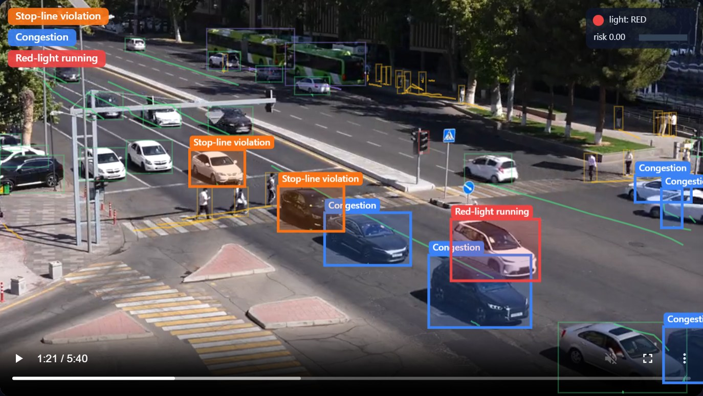
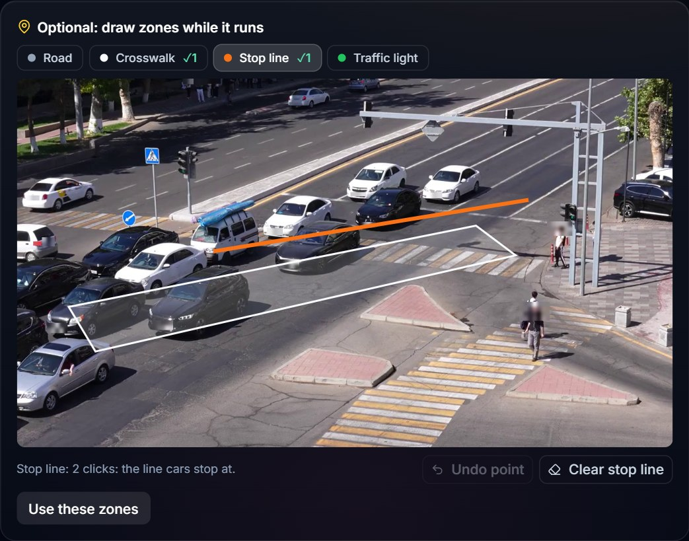
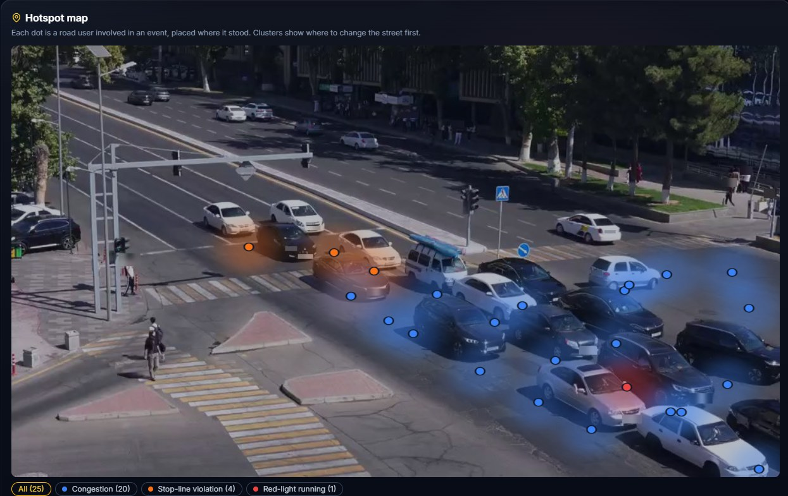
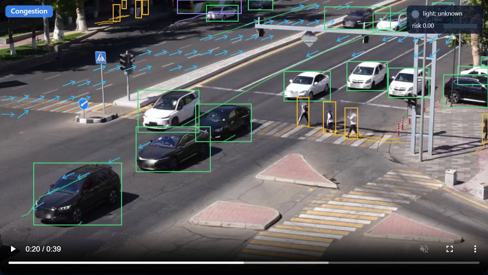
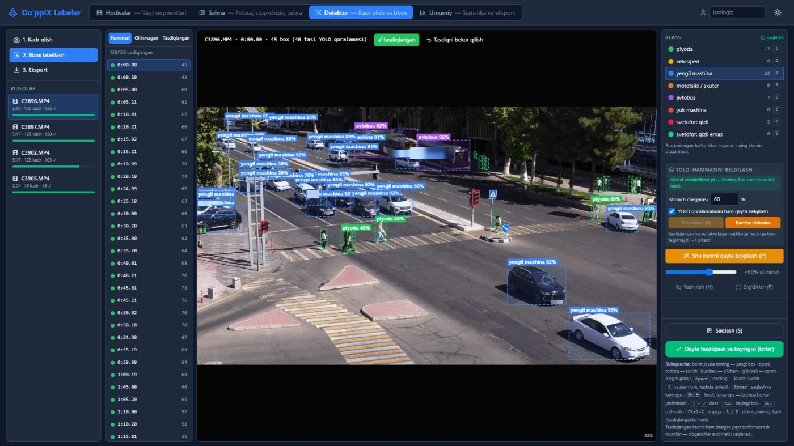

Turn any traffic camera into a road-safety auditor
It finds red-light running, drivers not yielding to pedestrians, wrong-way driving and near misses on the CCTV a city already has, and tells the traffic engineer what to change, before the crash.

Eldor Musayev · Shohruh Gulmirodov · Ibodulla Obidjonov | WIUT Hackathon 2026 Final · Computer Vision
| What we saw | Count | Per hour |
|---|---|---|
| Pedestrians on the roadway, off the crossing | 16 | 52 / h |
| Vehicles not yielding to pedestrians on the crossing | 9 | 29 / h |
| Vehicles stopped on the crossing on red | 6 | 20 / h |
| Red-light running | 2 | 7 / h |
Nobody was hurt in these 18 minutes, and none of it appears in any crash statistic.
The traffic engineer of a city district, who must decide where to change signals, markings or crossings.
The city road-safety budget: a monthly subscription per existing camera. Second customer: insurers buying risk per intersection.
Manual site surveys and crash reports. The cameras record, but nobody watches for near misses.

1 · Upload a video or photo. 2 · Optionally draw road, crossing, stop line and light while it processes.

3 · Report + hotspot map + PDF for the engineer. 4 · City dashboard: every camera ranked by risk, before/after comparison of a fix.
Learns the road and lane directions from the traffic: wrong-way, near miss, stopped vehicles, slow traffic.
Adds red light, stop line, pedestrians on the roadway and failure to yield.
Recognised automatically and re-aligned, even if the camera shifted.
giyos1212-safejunction.static.hf.space
Frontend on Hugging Face; API on our RTX 3060 server; deployed by GitHub Actions

A camera it has never seen (zero-config): blue arrows are lane directions learned from the traffic in 40 s; boxes are tracked road users; heads and plates blurred.
Our YOLO26m fine-tune: 6 road-user classes + light state. ByteTrack. ~10 fps.
Drawn zones, or known camera re-aligned (ORB + RANSAC), or learned flow field: drivable area + lane directions.
10 interpretable rules (red light, yielding, wrong-way…) + PET conflicts, the measure city safety studies use.
Plate detector run only inside each vehicle box + head blur, on the server.
Hotspot map, PDF, recommendations; dashboard ranked per 1,000 pedestrians or by HSM Empirical Bayes.
| Inference | on-premise GPU server next to the city's video archive (ours: RTX 3060) |
| Speed, measured | 2× faster than real time at 10 fps · 1 photo in 0.5–0.7 s |
| Capacity | 5 fps loses no accuracy (ablation 0.828 → 0.827), so ≈ 4 cameras per GPU |
| Night, rain, local vehicles | measured on 35 REAL night frames from 3 unseen cameras (our labels): ours 0.19, general COCO 0.58 mAP50, so each camera auto-picks its detector (ours by day: 0.97); plates blurred, never read |
| Cost per camera | ≈ $12.7 / month infrastructure (server + power; assumptions on slide 8) |
Tashkent traffic: Cobalts, Damas, articulated buses, our traffic lights. We built our own labeling tool (event timeline, scene editor, YOLO pre-labels) to make it.
Lane directions learned per grid cell from traffic. A car is judged against the field with its own samples removed, so one wrong-way driver cannot teach the system its direction.
The metrics Miovision, Transoft/Brisk and Bellevue WA use, on any existing camera, checked against our own labels of 4 videos.

Our labeling tool: YOLO pre-labels, human review, export.
| What | Test set | Result |
|---|---|---|
| Detector | 22 held-out frames, 1,386 boxes | mAP50 0.978 |
| Event rules (zones) | our labels, 4 videos, 18 min | Score A 0.83* |
| Wrong-way, zero-config | 18 min real traffic | 0 false alarms / h |
| Wrong-way, zero-config | 60 real cars played backwards | 93 % caught |
| Stopped / congestion, zero-config | our labels | F1 0.0–0.67 |
| PET conflicts (new) | 9 labeled failure-to-yield events | 7/9 have PET < 3 s |
* Optimistic: tuned on the same videos. Zero-config congestion fires on red-light queues; drawing a stop line fixes it.
| Condition | Daylight model | Synthetic-night fine-tune |
|---|---|---|
| Day | 0.975 | 0.978 |
| Fog | 0.971 | 0.976 |
| 540p low bit-rate | 0.881 | 0.857 |
| Rain | 0.793 | 0.967 |
| Motion blur | 0.712 | 0.959 |
| Night | 0.390 | 0.916 |
| REAL night (labeled) | 0.19 | 0.06 |
Real night, labeled, 3 unseen cameras (35 frames): ours 0.19 · synthetic-night fine-tune 0.06 · general COCO 0.58 · our 4-epoch multi-domain 0.33. Synthetic night (0.92) did not transfer, so the app picks the detector per camera.
| Team: 3 people × 3 months × $900 | $8,100 |
| 2 GPU servers (RTX 3060 class) × $1,200 | $2,400 |
| Labeling local footage (own tool) | $1,500 |
| Power, hosting, network | $400 |
| Licences: Ultralytics AGPL-3.0, open source | $0 |
| Total | $12,400 |
| Price (assumption) | $40 |
| Server $1,200 / 36 mo / 4 cameras | $8.3 |
| Power 0.3 kW × 720 h × $0.08 / 4 cameras | $4.3 |
| Gross margin | $27.3 (68 %) |
| Fixed costs: team $2,700 + other $300 | $3,000 / mo |
Every number except "4 cameras per GPU" (measured) is an assumption; each can be changed in the Business calculator on the live site. A closed-source commercial release needs an Ultralytics Enterprise licence or a permissively licensed detector.
On-premise server at the city's video centre. Draw zones, start collecting, and record real night and rain footage.
Night and weather fine-tune; per-site precision checked by the engineer in the app.
For example a leading pedestrian interval: violations per hour before and after, from the same camera, in the dashboard's before/after view.
Team captain · ML Engineer
Web Developer
Cybersecurity Engineer
Before the final (declared in the README): detector, tracker, zone rules for one intersection. During the final: any-camera mode, privacy blur, city report with hotspot map and PDF, city dashboard with before/after, low-light model with day/night routing, robustness tests, CI/CD. Git history shows both. Built with an AI coding assistant; open source: Ultralytics, PyTorch, OpenCV, FastAPI, React.
Try it: giyos1212-safejunction.static.hf.space